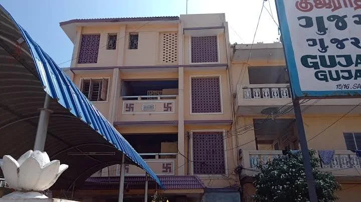

See before you arrive
A closer look at Gujarat Bhavan.
Browse rooms, meal service, property spaces and views from around Rameswaram. Select any image to view it at full size.

Photo Gallery
Rooms, meals and the complete Bhavan experience.
Use the filters to browse every available photograph by category.